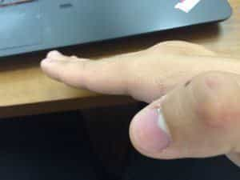

< < < Back
How To Begin Hardening Your Bones, Tendons, And Flesh To Endure Monstrous Punishment – Return Of Kings
If you pay attention to pop culture at all, you are likely familiar with the image of an expert martial artist breaking bricks and boards with a blow from their hand. Delve a little bit deeper into the rabbit hole of inanity and you’ll find dubious claims of self-proclaimed masters claiming to be able to break a specific brick in a stack or claim to be able to smash bricks without any physical contact at all.
I am here to tell you that while concepts such as the No-Touch KO are nonsense, standard breaking is quite accessible, even to those who are not taking formal martial arts lessons. But breaking is just one facet of the overall discipline that is known as body hardening.
What is Body Hardening?
Body hardening is defined as a form of conditioning and strength training specific to combat sports. Unlike what the average person would think of “strength training,” body hardening does not entail strengthening the muscles to lift heavier and heavier weights, but rather it trains the bones, tendons, and flesh to withstand tremendous external forces. This prepares the trainee to both deliver harder blows with the limbs, and withstand the same from a combative opponent.
As with most things in martial arts, there are many ways to go about doing it, and some of them are rather dubious. Obviously, things such as the infamous “Dim Mak” linked above and other such frauds will not be discussed here. However, more than perhaps any other martial arts topic, I am more amenable to the traditional, more “esoteric” styles of martial arts when applied to body hardening then I am with other aspects of these arts (such as the forms/kata, which I and many people find largely ineffectual).
As usual, I do not profess to be an expert in the field, but I have had experience with the various types of body hardening enumerated below, been taught these techniques by experts, and have found them to be effective.
1. Sandblasting
If you will recall, in one of my grip training articles, I discussed how you can do a variation on this kung fu training technique to develop a mighty grip. When done in its traditional way, it also develops the strength of the fingers, hands, and wrists, although not in the sense of being able to generate a lot of force through crushing, punching, or pulling.
No, this technique is specifically for developing the strength of the hands so that they can withstand the tremendous force that will be transmitted through them when the fingers are used in attacks (as is typical of some schools of martial art such as both types of Praying Mantis), typically in attacking the soft tissue of the face or neck and various pressure points.
Before you begin sandblasting, you should develop some modicum of finger strength—I recommend fingertip pushups to do this, and you can read about that here.
Once you’ve at least become capable of doing two handed finger-tip pushups, you can start sandblasting. Ironically, this first step will not involve sand at all, but rather dried beans. Martial arts suppliers will sell mung beans specifically for this purpose, but you can use any sort of dried kidney bean in bulk for this.
Fill up a decent-sized bucket with said beans, stretch out the fingers, keep them taut but NOT hyperextended, and jab them into your big bucket of beans. The aim of this exercise is to reach your fingers to the bottom of the bucket.
These fingers have been hyperextended, and jabbing with these fingers can cause injury

These fingers are taut and extended, but the knuckles are not hyperextended. This is the proper finger posture.
Once you have accomplished that, fill the bucket with sand, and repeat. You will notice that the exercises will get easier and easier regardless of what’s in the bucket, due to the bones and tendons of your fingers hardening and becoming accustomed to the force. Once you’ve reached the bottom with sand, fill the bucket up with pebbles. And once you’ve done that, use steel shot.
2. Bottle Rolling
Bottle rolling is one of the first techniques that I have informally grouped into the “Iron Body” category—while this is likely not the proper term, all of these techniques entail applying force to your own body in with the aim of deliberately conditioning and hardening them for future use. There are many ways to go about doing this in many different styles of martial arts, but bottle rolling is the easiest and least painful one, and is thus the most appropriate one for the beginner.

It can be done on the feet, but is most often done on the shin
Taking your standard glass beer or soda bottle, press it hard against the shin, and roll it up and down. Repeat for both shins. This will dull the nerves and allow you perform shin kicks harder than an unconditioned shin. Bear in mind that once you have developed some tolerance for pain in the shins, you should begin other forms of body conditioning such as actually practicing shin kicks on a bag. Bottle rolling subdues nerve endings to a much greater extent than it actually conditions the bone, which can lead to injuries down the road.
And those techniques will be for another day.
Read More: Why Stretching Is Essential For The Body (With 6 Beginner Stretches To Get You Started)